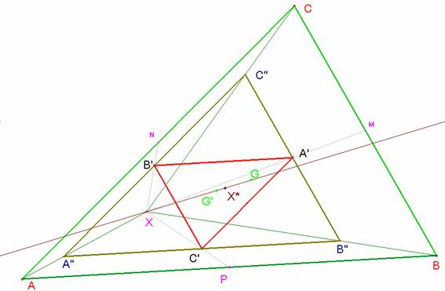

Problema
274.- 1) Sea X un punto arbitrario del triángulo ABC.
Construimos los puntos C´, B´, A´, como los centros de gravedad de los
triángulos ABX AXC y BXC. Sea X* el punto de intersección de las rectas
AA´, BB´ y CC´. Se pide :
a) El triángulo A´B´C´ es homotético al
triángulo ABC. Calcular el centro y la razón de la homotecia.
b) Si G y G´ son los centros de gravedad
de los triángulos ABC, y A´B´C´, respectivamente, probar que los puntos G, G´,
X y X* son colineales, y, calcular su razón doble.
Romero,
J.B. (2005): Comunicación personal
Solución
de Saturnino Campo Ruiz,, profesor del IES Fray Luis de León, de Salamanca..-
a)Trazando
paralelas por A,’B’ y C’ a los lados
del triángulo ABC se construye el
triángulo A”B”C”. Se pasa de uno a
otro por una homotecia de centro X y
razón 2/3. P, punto medio de AB, se
transforma en C’ punto medio de A”B”, y por ello A”B”C”es homotético a A’B’C’ por una homotecia de centro G’, el baricentro de ambos, y razón
-1/2.

La composición de estas homotecias es otra homotecia
de ABC en A’B’C’. Su centro es el punto X*
y su razón -1/3 (el producto de las razones de los factores). Además, los
centros de las tres homotecias, puntos X,
G’ y X*, están alineados.
b)
Como en una homotecia son homólogos los baricentros, resulta que
G y G’ están alineados con X y por tanto ya tenemos la alineación de los
cuatro puntos que buscábamos. La razón doble (G G’ X X*) es el cociente de las razones simples (XGG’) y (X*GG’). La primera vale 3/2 (razón de paso de A”B”C” a ABC) y la
segunda -3 (igual de A’B’C’a ABC ). Por tanto el valor de esa razón
doble es -1/2.